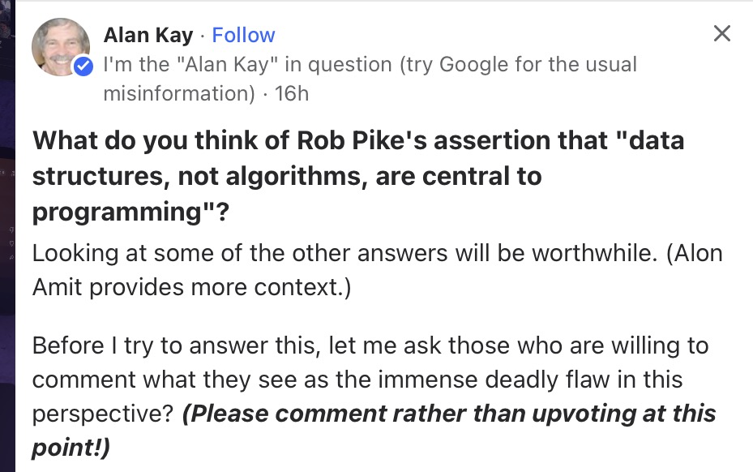

Processes are Central to Programming
-- Minutes to Read

What do you think of Rob Pike's assertion that "data structures, not algorithms, are central to programming"?First, we have to identify what it means to create a program in general, not just on computers. Generally speaking, the main idea is to create some sort of process that carries out a set of goals. An engineering program is a process to teach students engineering, a gym program is a process to make its customers physically (and perhaps mentally) fit, etc.
From this, we can see that software programs are no different, they just carry out a set of goals by setting bits in memory. How those bits are represented is a more or less a social/design convention.
Of course, arbitrary representations are something that have been created for real world things as well. In this sense, one could equate bits of memory to pencil strokes on a piece of paper. As a society, we’ve decided that pencil strokes on a paper in a certain form denote a written language.
Similarly, bits in memory in a certain format have their own definitions (eg. A bitmap display, and perhaps what we call data structures). So if we want to look at better programming, we have to consider what representations are, and what it means to create such representations.
In this sense, writing on a piece of paper is in its sense a program carried out deliberately by a human. Similarly, one can say that a CPU is also a writer, just that it writes to memory instead of paper.
So if programs are just processes to create representations, then what do the representations mean? Of course, they have to at least be correlated with our defined goals if they are to be useful at all.
The truth of the matter however, is that representations are often subject to different interpretations by other programs. Those other programs then produce different representations based on their interpretations of the representation. In many cases this can be quite problematic, especially if one looks at public discourse in political arenas. As an example, what we call public generalized data and statistics, especially those derived from science, are often interpreted and used by others in various manners as “evidence” to win a specific argument.
Thus far, we have 2 things, representations, and programs that create representations. We can see that many representations themselves can be misinterpreted. Both of these are tangible concepts, so can we generalize here perhaps?
It turns out we can! What if we also consider programs themselves as representations? If a program is a process to produce representations, we can therefore have programs produce other programs. This akin to how biological lifeforms produce other lifeforms, of which the produced lifeforms are formed from biological processes themselves.
In essence, something formed of processes is generally alive and running, as it would be dead if its representations weren’t actively creating more representations.
However, if we look at nearly all software programs today, programming langauges inject a prevailing view in their users that programs are simply made up of simple static representations that aren’t runnable processes. At a high level, these are of course data structures, and the process of instructions being carried out by the CPU are of course algorithms. Yet, the algorithms are also just representations, just a more dynamic representation than bits in memory.
Therein lies the deadly flaw with Rob Pike’s perspective. If everything is a representation, why choose one that can easily be misinterpreted at scale?
Look at web browsers for instance. It turns out, that given an arbitrary combination of HTML, CSS, and JavaScript, there is no guarantee that all mainstream web browsers will produce the same results from that combination. Some of the browsers (especially Safari), will quite literally misinterpret the combination, whereas others will interpret it in a desireable manner. Unfortunately, such misinterpretations in web browsers are quite common in the real world, and have resulted in numerous software bugs.
The more static the representation, the more trust we must place on various other representations to interpret the representation properly. In this sense, any networked process that responds with JSON is therefore placing a high degree of trust on its recipient, and this trust has of course been broken many times over the years (eg. Outdated clients assuming the JSON payload will be a certain shape, and subsequently throwing errors when its not that shape.)
Another harsher form of this are typical user interfaces. Currently, the dominant paradigm is to have a UI designer design some user interface in some part of the world, and distribute it to users in other parts of the world. With this approach every user, no matter their circumstances, gets the same user interface, so its up to the UI designer to design something that satisfies all the needs of those users. Secondly, the designer must also trust that all of those users will use the interface in its intended manner.
Of course, this process almost never succeeds because different users have all sorts of different needs, and the best those users can do is interpret the user interface in the best manner that suits them. These different expected interpretations are also one of the most common causes of software bugs.
To end this off, what is central to programming is really much more about processes as dynamic representations more so than data as static representations. Any system capable of scaling must account for misinterpretations of static representations by other dynamic representations. Therefore, it’s often better if it can operate with more powerful dynamic representations that can produce further necessary tailored representations for a specific rather than abstract context.
— 1/18/26
PS (1/20/26)
Below this is Alan’s answer. Personally, I think he touched a lot more upon the idea of meaning directly, whereas in my answer that term was conflated with “representation” (though it seems he did use the term “markings” in a similar manner to how I used “static representation”).
Data dominates. If you've chosen the right data structures and organized things well, the algorithms will almost always be self-evident. Data structures, not algorithms, are central to programming.
If we are talking about computing in general, this is an example of “category confusion” — likely with simple marking media such as paper, and not with computers at all. However, we could also say that the category confusion is deeper than that, and is with programming or even meaning itself.
We can also squint at this from another angle with the observation that in much of computer over history pragmatics have dominated semantics (including often obliterating the latter).
Or we can note that we have nothing — for markings — with humans or computers — if we don’t have process …
If we take a simple marking — such as sine(x) — we have a certain meaningful mathematical relationship in mind that our representations and uses of in computing want to not lose touch with. If we have an “x” in mind, then we want whatever this is to give us a number representation that is close enough to the mathematical meaning for our purposes and intentions. Note that in a computer language it doesn’t matter whether this is always internally represented by a pattern of bits: there is a process (generated by a program) whether we think of this as “data” (it could be a table), or “program” (there are programs that can generate approximations of sine(x)). It could be a mixture (an array for integer degrees and a program to compute the rest). In any case, “data” is not fundamental.
In a more “data-base-case”, let’s consider the query (notice that “sine(x)” could be considered a query) date-of-birth(Bob). Here we might be using this “base” as a way to store and retrieve properties of things. The category confusion here (which was swept under the rug of pragmatics) is that “age-of” is also a property of a thing. In both cases we are semantically dealing with a property and we expect a number of some kind as the functional association with the property and the thing/person mentioned.
Note that not only do we need “age-of(Bob)” to be computed at the time of the query (from date-of-birth(Bob) and current-time, but we should ask the question of whether we want the “retrieval” to be a mere number. The mere number will eventually lose its meaning.
Maybe the result of the “retrieval” should be a process that will always try to mean “age-of(Bob)”. Note that this could be considered a “type” (and it would be really valuable to have such types) but that this is far beyond most conceptions of types after 80 years of programming computers.
Are we going to (a) ignore this? (b) have special purpose patches of code? (c) or meet it straight on and see that “data as organization of bits” is too weak an idea to survive the earliest historical needs for computing.
Intel might not yet understand this — etc — but computing needs to. The Alto at Parc didn’t have floating point hardware. Smalltalk at Parc did have many kinds of numbers and would — behind the scenes — compute the meaning (and convert automatically) when necessary (if a primitive failed to be found in the HW). This was because “humans think first in terms of magnitudes” (and we can deal with the many ways of representing and computing these as mostly invisible optimizations).
A key idea here is: we are always computing even when we just might think we are “using” a “data structure” — something has to run according to a scheme in order to “do” or “use” anything. Once this is grasped, then it can be turned to our great advantage to start recapturing semantics in ways that “mere marking media” can’t (note what “meaning” implies if a human comes upon a marked up paper… — “something has to run according to a scheme …”).
How about as a slogan: The center of programming is meaning ?